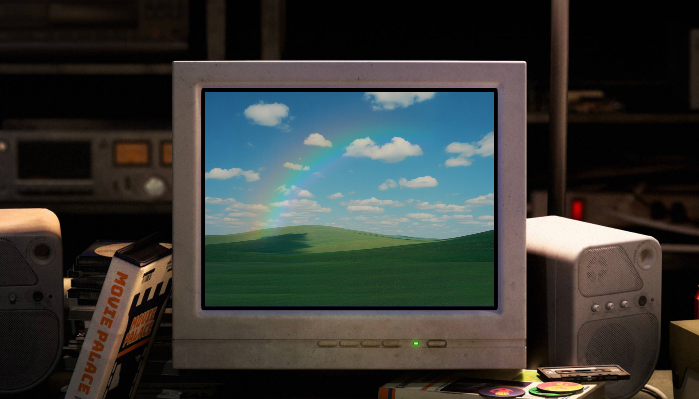
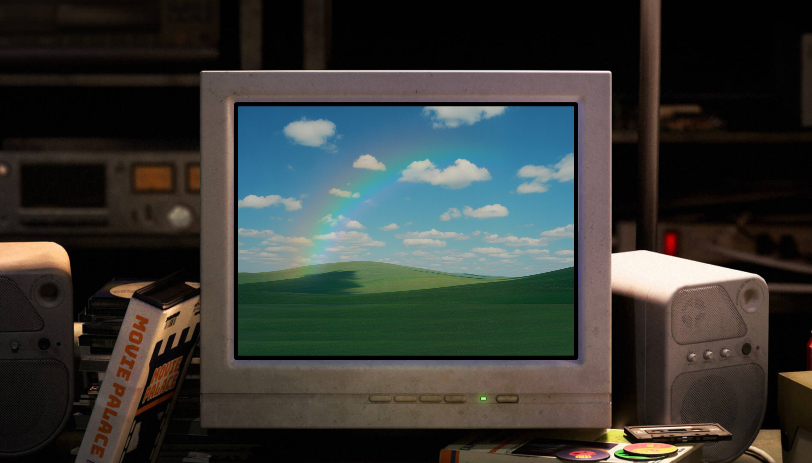
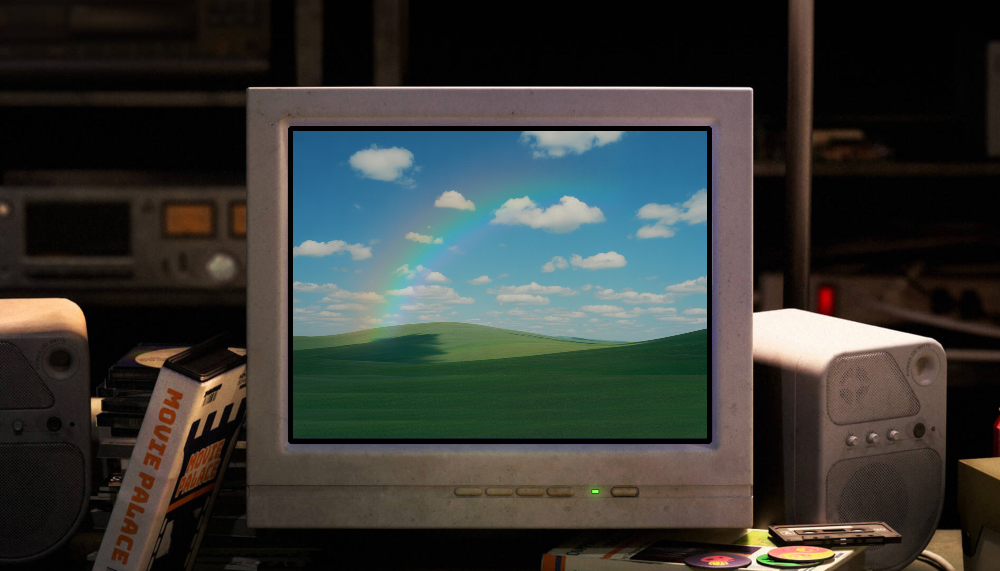

Press the red button
to turn on the computer!

Press the red button
to turn on the computer!
 Dentsu Campaign Projects
Dentsu Campaign Projects Bāgh Cottons
Bāgh CottonsHi, I’m Amisha Behl! I'm a UX Designer passionate about crafting intuitive and engaging digital experiences, deeply rooted in user-centric design principles.
Whether you have a question, a project offer, or just want to say hello, I’d love to hear from you. Send a message, and I’ll get back to you as soon as possible:)
My internship experience at the Reserve Bank of India in 2021 and again in 2023 helped me explore how design plays a role in financial systems used by millions of people. During my second internship, I focused on understanding how banking apps function from a user’s point of view. I carried out a comparative study of popular financial apps like Paytm, HDFC Bank, ICICI Bank, SBI, Axis Bank, and others. The goal was to find common usability issues and suggest ways to make the experience simpler, smoother, and more accessible for users
As part of the study, I created ten detailed case studies of these apps. I examined the user flow, layout, onboarding steps, and how easily someone could complete basic tasks. I reviewed the apps by stepping into the user's shoes and noting areas where things felt confusing or slow. These observations helped me recommend practical design improvements. The project strengthened my research and thinking process as a UX designer. Below is a short case study of the BHIM UPI app, which highlights some of the key insights I gathered.
 Bhim UPI
Bhim UPI
Bagh Cottons is a small clothing brand I started with my mom four years ago. We work with beautiful Indian fabrics like Ajrakh, Kalamkari, and cotton block prints to create everyday wear such as kurtis, tops, dresses, and coord sets. What started as a small idea between the two of us has grown into something meaningful. We now sell mostly through our online pages and take part in exhibitions across Delhi NCR. Our focus has always been on handmade, sustainable pieces that celebrate Indian craftsmanship.
As a UX designer, I decided to turn Bagh Cottons into one of my personal projects. I began looking at everything through a design lens, thinking about how people discover our brand, how they shop with us, and how they feel when they receive a package. I redesigned the logo, refreshed the overall look and feel of the brand, and started planning our website with a simple and smooth user journey in mind. I also worked closely with customers at stalls, met vendors, and had meetings with lawyers during our rebranding. These experiences taught me how important communication, trust, and empathy are in creating a good user experience.
This project helped me grow in confidence. It encouraged me to talk to more people, ask the right questions, and really understand how design fits into every part of a brand, not just online but offline too. Bagh Cottons is a mix of design, storytelling, and heart, and I’m proud to include it in my portfolio..

During my two-month internship at Dentsu Creative, I had the opportunity to work on real client projects and gain firsthand experience in how large-scale campaigns are conceptualized and pitched. I contributed to the development of pitch presentations for brands like Maruti Suzuki, Oaken Glow, and Motorola, helping the team secure successful collaborations for upcoming advertising campaigns.
One of my key projects involved creating and refining campaign ideas for Maruti Suzuki’s Fronx. Out of the concepts I pitched, three were shortlisted by the client, with one being executed at India’s Auto Expo. Another campaign I worked on went live as part of Oaken Glow’s digital marketing strategy. I was actively involved in brainstorming sessions, collaborating closely with the copywriting team, working on creative direction, scriptwriting, and designing PowerPoint decks used for client presentations and pitches.
This experience helped me understand how ideas evolve into campaigns, and how important storytelling and clarity are when presenting concepts to clients. I gained a lot of confidence by interacting with team leads, creative directors,I also picked up practical design skills along the way — I learned to use Photoshop and improved my visual communication through real-time feedback. My time at Dentsu gave me a strong foundation in how advertising works from the inside and helped me grow both creatively and professionally.
Below are a few digital creatives that I created at dentsu
 Maruti Suzuki Celerio Creative
Maruti Suzuki Celerio Creative
 Maruti Suzuki Dzire
Maruti Suzuki Dzire


GAME OVER
Press SPACE to play Or click here to reveal social linksDino Jump!
Win 30 points to reveal the links!
Press SPACE to start Or click here to reveal social linksConnect with me:
LinkedIn Behance Instagram